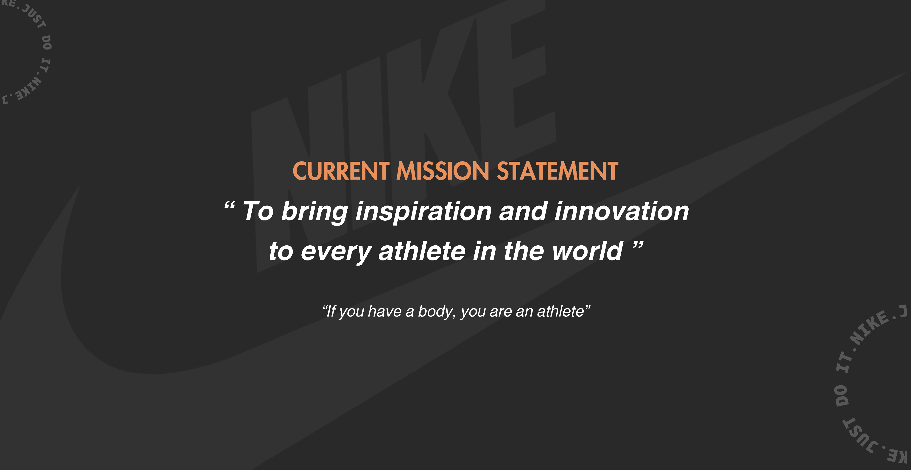
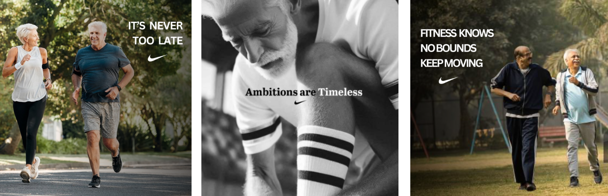
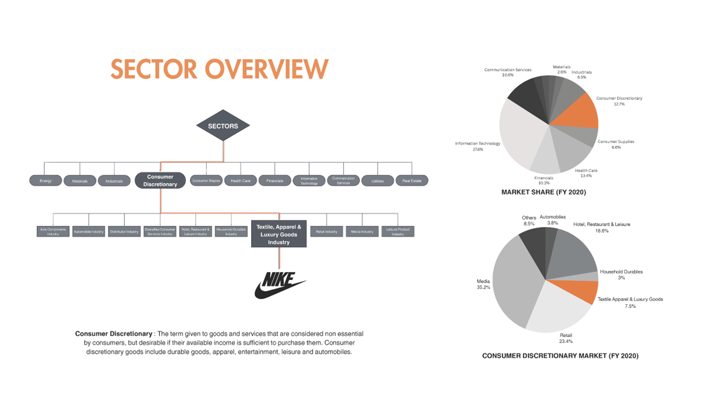
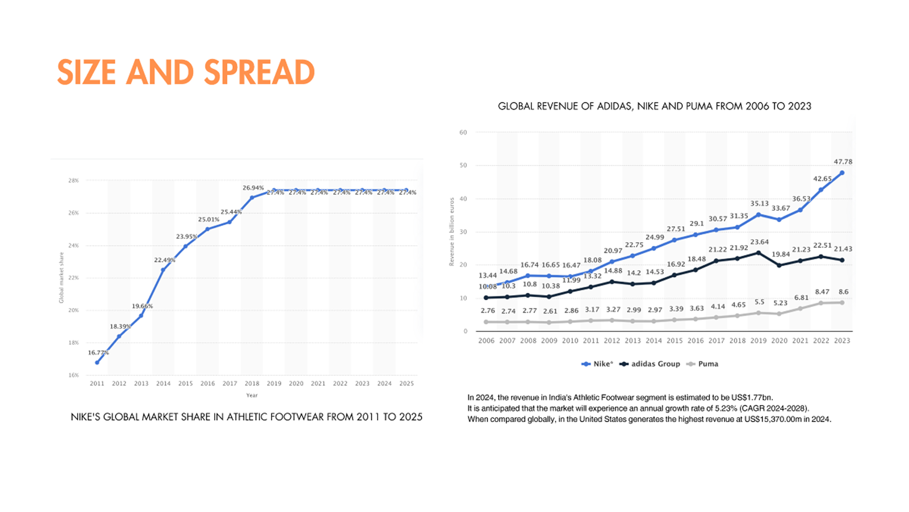
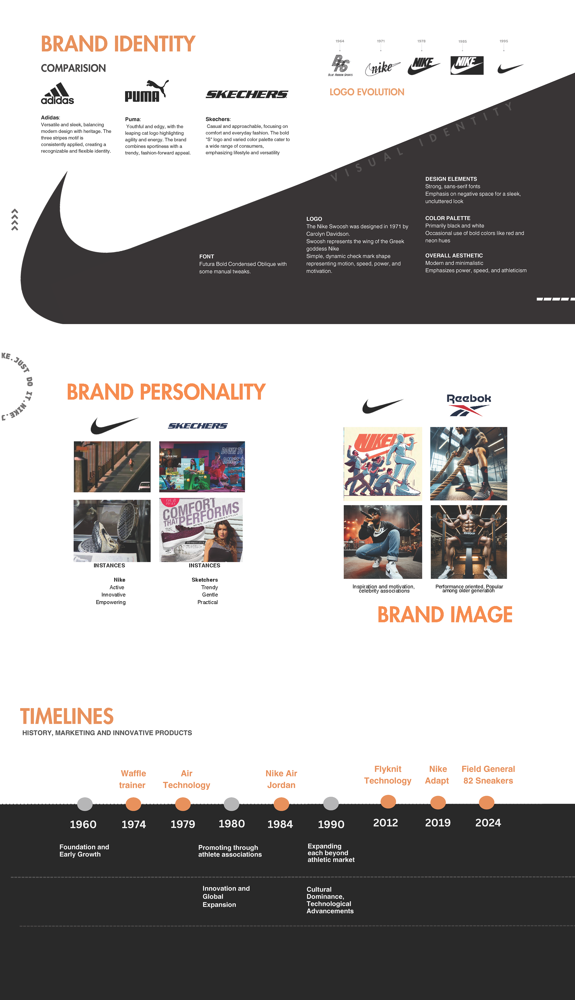

active forever NIKE campaign
Campaign Strategy | Digital Ads
July 2024
how might we expand Nike’s audience to senior citizens while staying true to its spirit of motivation and movement?
Through extensive market research and audience analysis, our team of 13 developed “Active Now, Active Forever,” a repositioning strategy and campaign that celebrated active aging. Blending humor, joy, and empowerment, we crafted visuals and storytelling that redefined Nike’s inclusivity—making movement a mindset, not an age.




behind the scenes


Collected inspiration from skincare and beauty brands to understand how multicolor is used in packaging. Most brands either use two-color combinations, keep an entire product range in one color with other sets in similar-value colors, or use black and white as a base when applying multicolor across different ranges. For Klenvor, we challenged this pattern by pairing the brand's peachy pink with four additional colors, creating a more distinct identity.
